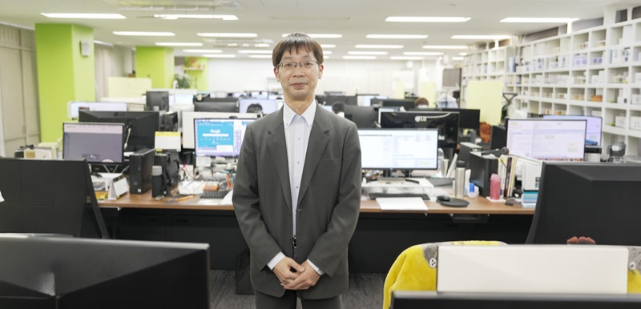
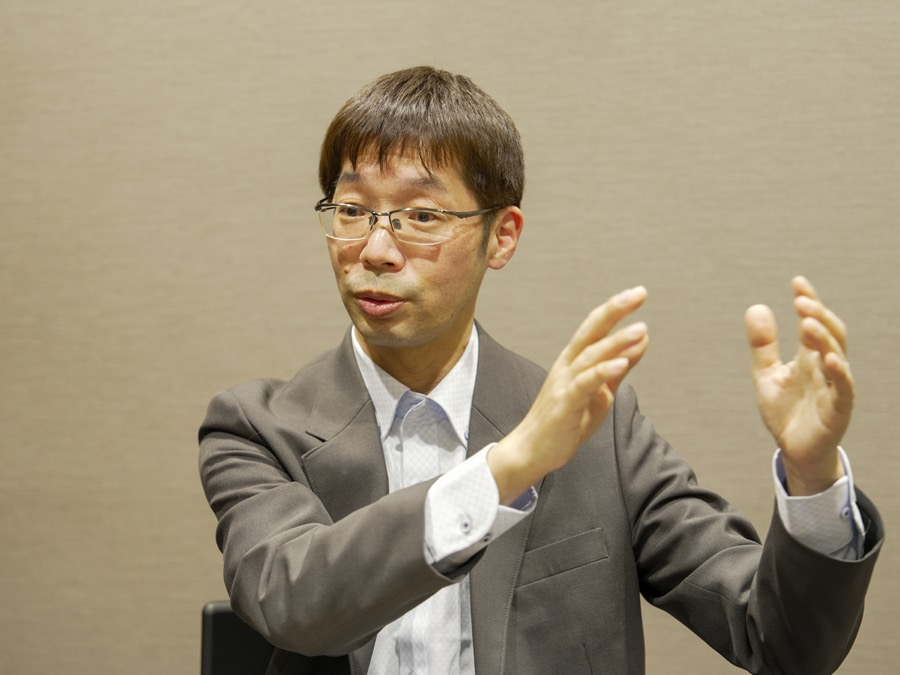
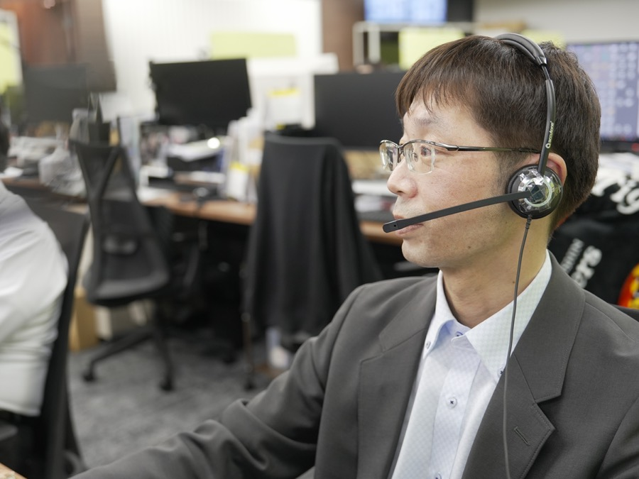
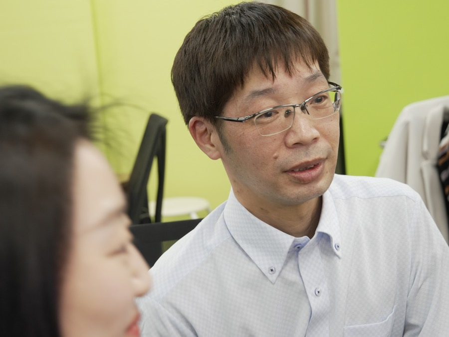

INTERVIEW 02
「見つかるまで探す」泥臭い調達とチームの絆で、会社の進化を最前線で支える

01フットサル中心の生活から一転、会社の成長に「ワクワク」した日々
入社のきっかけは「家から近くて、フットサル中心の生活に合っていたから」という、正直な理由でした。私がアルバイトで入社したのは会社の創業期で、当時はWEB注文よりFAXや電話注文も多く、物流システムもない状態でピッキングや梱包をしていました。でも、そこから会社が新しいシステムを導入し、ものすごいスピードで綺麗に、効率的に進化していく過程を最前線で見てきました。やることは同じでも、常に新しいことに挑戦し続けているというワクワク感があり、終わりを決めずにここで働き続けたいと思うようになりました。

02「見つかるまで探す」執念と、チーム戦で挑むやりがい
現在は商品開発・企画部門で、国内仕入商品の調達や価格交渉、新規開拓などを担っています。仕事をする上で一番意識しているのは、イレギュラーが発生した場合も「見つかるまで探す」こと。例えば大雪でいつものルートから仕入れができなくなったとしても、郵便配達のバイクは雪でも止まりません。だからこそ、関西中の在庫を探し回ってでも部品をお届けするのが我々の使命です。また、大きな値引きや条件交渉は私1人ではできません。今までの信用をベースに「ここは上司に同席してもらって強めに交渉をお願いしよう」「マーケティング部門の販促と連動させよう」と、チームや他部署を巻き込んで進めます。周りのサポートのおかげで、厳しい目標も「ノルマ」ではなく「ワクワクするチャレンジ」として前向きに取り組めています。

03温かい仲間に支えられ、全部門で頼られる「マルチプレーヤー」へ
この会社の魅力は、多様なバックグラウンドを持つメンバーから刺激をもらえることです。以前はデータ分析が全くできませんでしたが、同僚がエクセルの関数から見やすい資料の作り方まで全部教えてくれました。主婦のパートさんから掃除の裏技を教えてもらうこともあり、毎日が発見の連続です。実は一度、妻の体調不良と引っ越しの都合で退職したのですが、状況が落ち着いた際にまた応募したところ、温かく迎え入れてくれました。これからの目標は、仕入れの枠にとどまらず、どの部門でも戦力になれる「マルチプレーヤー」になることです。マーケティングがどんな商品を求めているか、オペレーションがどんな問い合わせで困っているか、自ら情報を取りに行き、会社全体の最適化に貢献していきたいです。
1日のスケジュール
- 出社、社内連絡ツール確認、メール確認
- イレギュラー対応、お客様からの問合せ対応
- 仕入先からの価格変更、商品情報変更依頼分の確認、修正
- 休憩
- 仕入先からの価格変更、商品情報変更依頼分の確認、修正
- 来客対応（仕入先）
- イレギュラー対応、お客様からの問合せ対応、商品データ確認/修正
- 返品対応、タスク処理、メール確認
- 部内フォロー後、退社